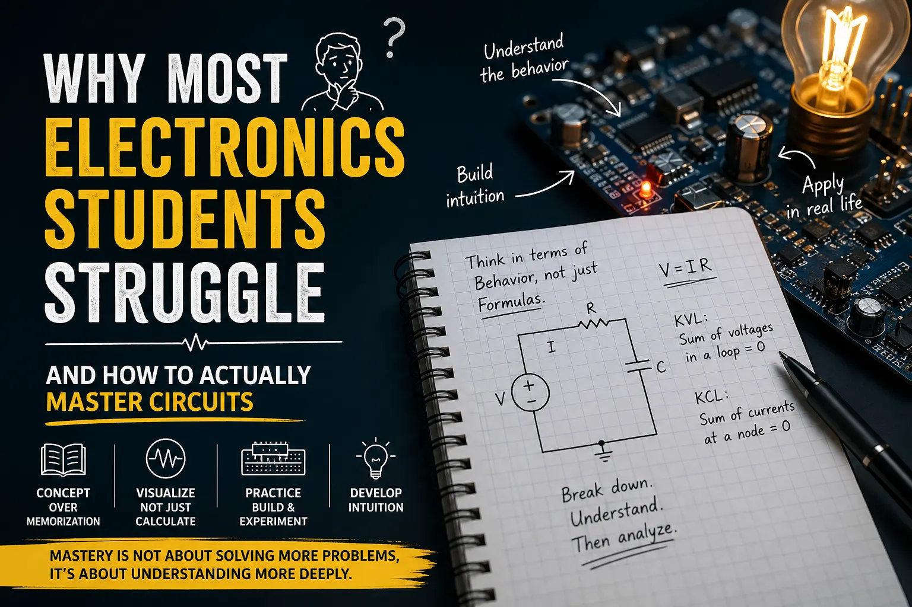
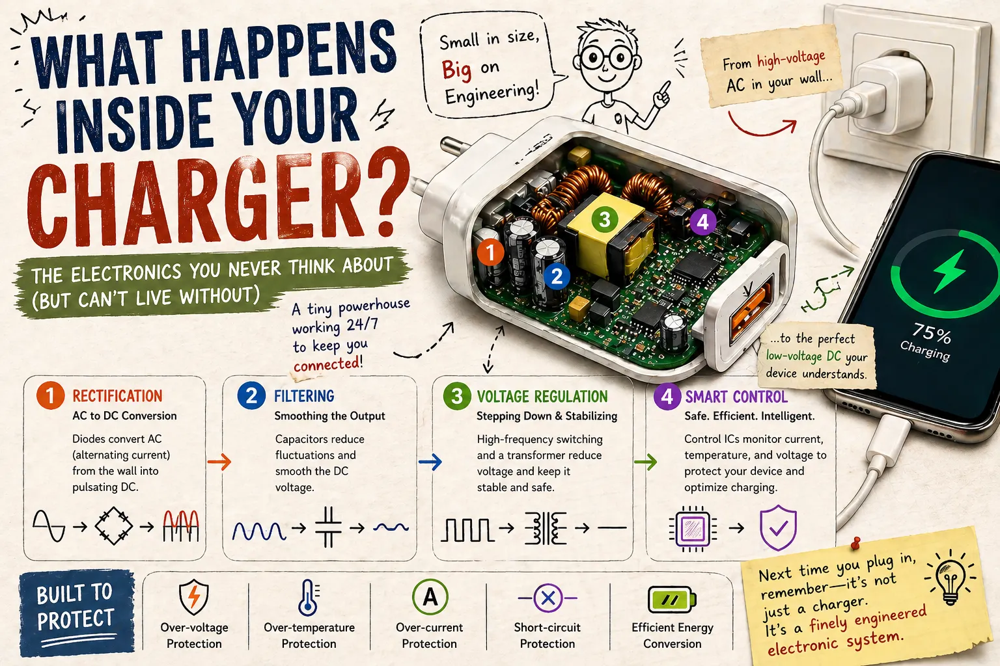

Articles on electronics fundamentals, written on Medium
Alongside these notes, I write short, practical articles that explain electronics concepts the way I wish they'd been explained to me — on Medium. Each card below opens the full article in a new tab.

A look at why circuit theory trips up so many first-year students, and a practical approach to actually building intuition instead of memorising formulas.

A plain-language breakdown of what's actually going on inside the phone charger on your desk — from AC mains to the DC voltage your device sees.